стажёр.рф
Агрегатор поиска стажировок для студентов — платформа преднайма

Введение
стажёр.рф – это не просто агрегатор стажировок. Это платформа преднайма, где навыки студентов подтверждаются действиями: заданиями, рейтингом, портфолио и обратной связью от рынка.
Российский рынок стажировок фрагментирован и непрозрачен. Студенты сталкиваются с замкнутым кругом «нужен опыт – но негде взять», а компании отбирают кандидатов по формальным признакам. Проект решает эту проблему через прозрачный механизм оценки навыков.
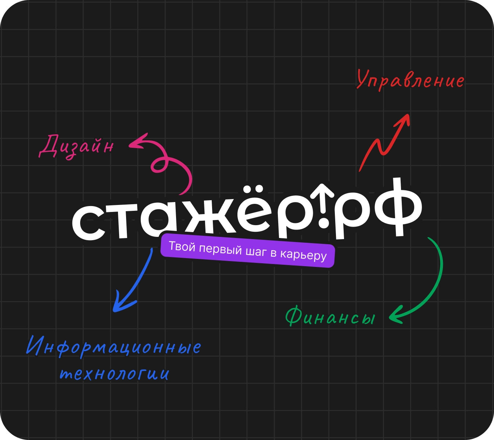
О проекте
Проект начинался с простой, но болезненной проблемы: студентам сложно начать карьеру. Большинство из них не понимают требований и не имеют инструментов для конкуренции. Моя роль заключалась в формировании продуктовой гипотезы и трансляции инсайтов в UX-логику.
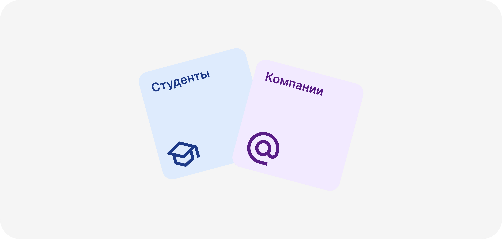
Исследования
Интервью со студентами и HR-специалистами стали фундаментом. Выяснилось, что более 40% студентов никогда не искали стажировку. HR-ам было сложно сравнивать кандидатов без опыта. Это привело к мысли, что продукт должен поддерживать «доказательство навыков».
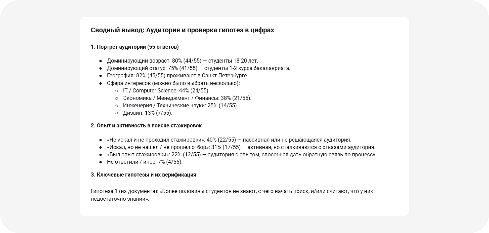
Продуктовая логика
Ядро продукта: Задания → Рейтинг → Портфолио → Осознанный отбор. Я превратил эту сложную логику в простой опыт для студентов с разным уровнем цифровой грамотности через детально проработанные User Flow.
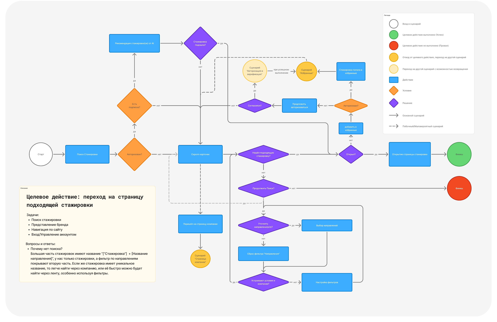
Визуальное исследование
Был проведен анализ конкурентных решений, выделены лучшие практики и отсечены неудачные подходы. На основании референсов началась разработка визуальной идентичности бренда.
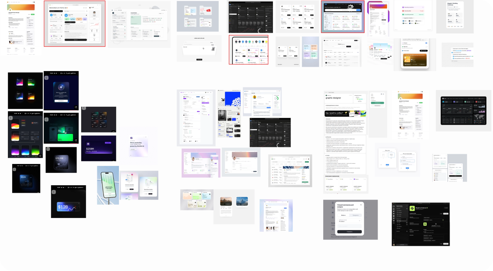
Цветовое кодирование
Я выбрал сдержанную чёрно-белую основу. Однако каждый трек (направление) — IT, финансы, дизайн и др. — получили собственный акцентный цвет, формируя ощущение принадлежности к комьюнити.
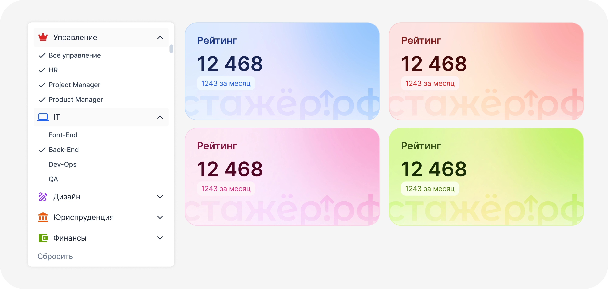
Дизайн-система
Разработал дизайн-систему с использованием токенов для быстрой масштабируемости. Для сложных компонентов была подготовлена документация для разработчиков.
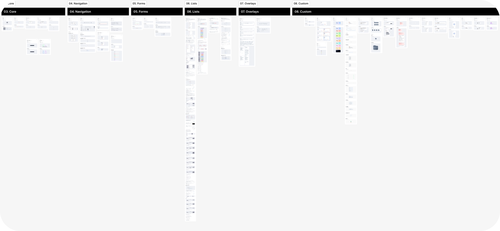
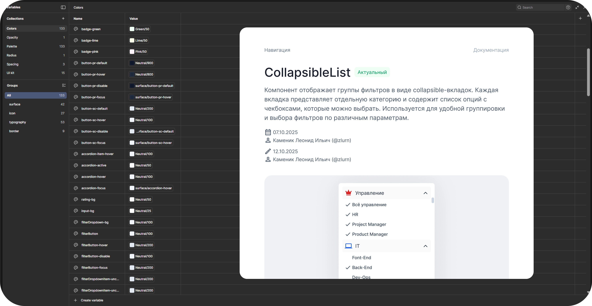
Геймификация
Механика заданий и рейтинга стимулирует студентов к активному развитию и позволяет компаниям объективно оценивать потенциал кандидатов.
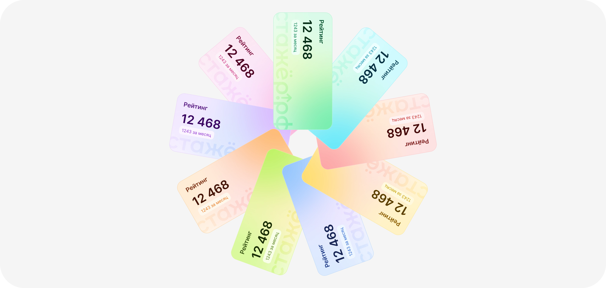
Разработка на Quasar
Проект на Quasar накладывал ограничения. Я осознанно шёл на компромиссы в пользу скорости. Мы регулярно проводили дизайн-ревью после спринтов, синхронизируясь с разработкой.
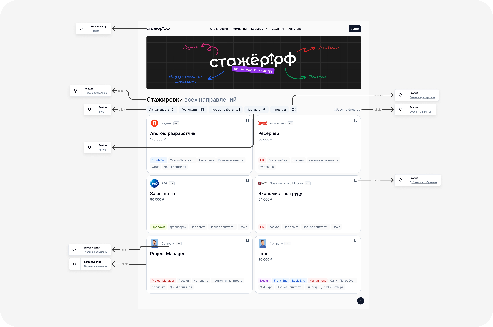
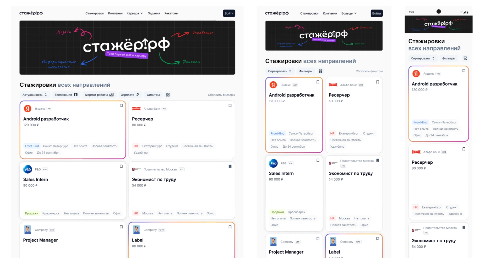
Тестирование
Юзабилити-тестирование стало частью процесса. Мы проверяли прототипы на реальных пользователях, что помогало бороться с «профессиональной слепотой».
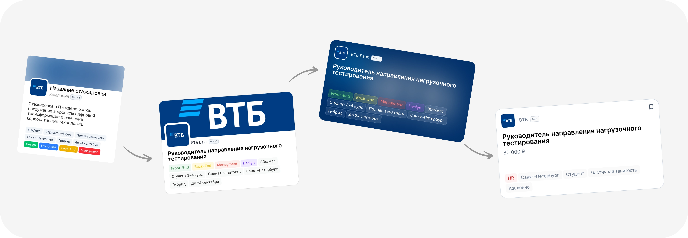
Итоговый дизайн
Дизайн стал связующим звеном между исследованиями и стратегией. Стажёр.рф перестал быть «ещё одной платформой» и начал формироваться как целостная система.
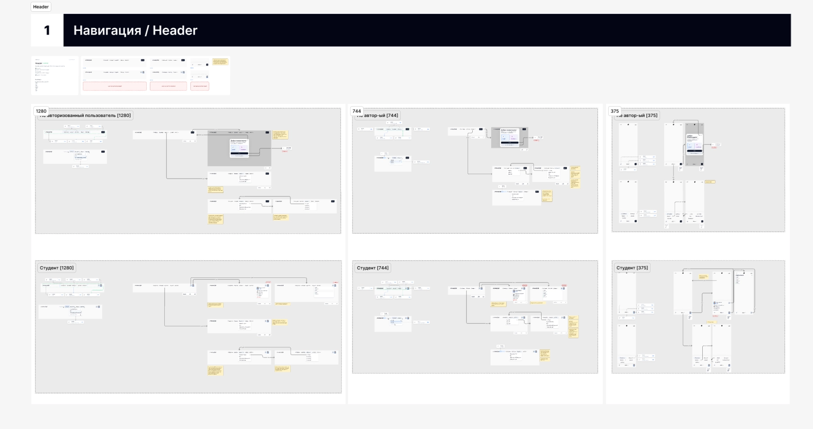
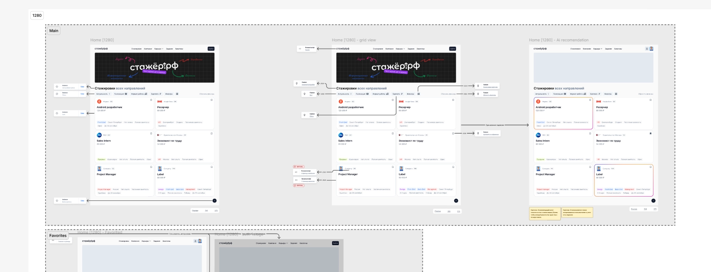
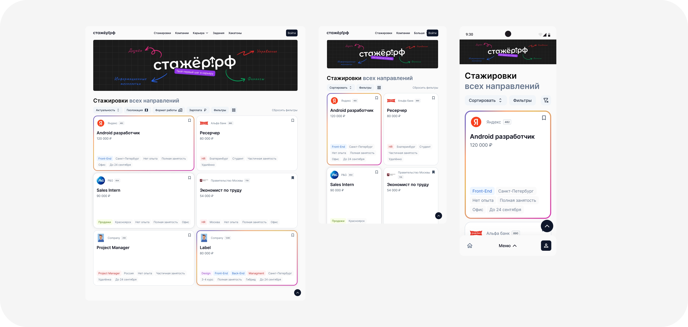
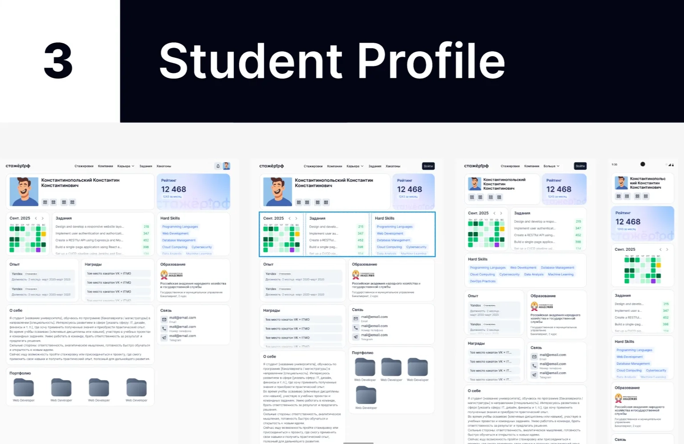
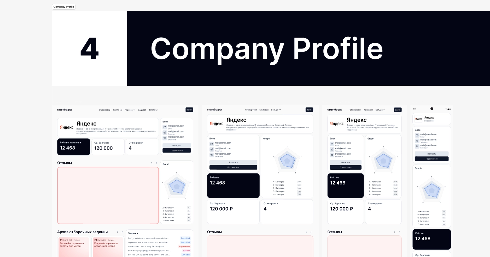
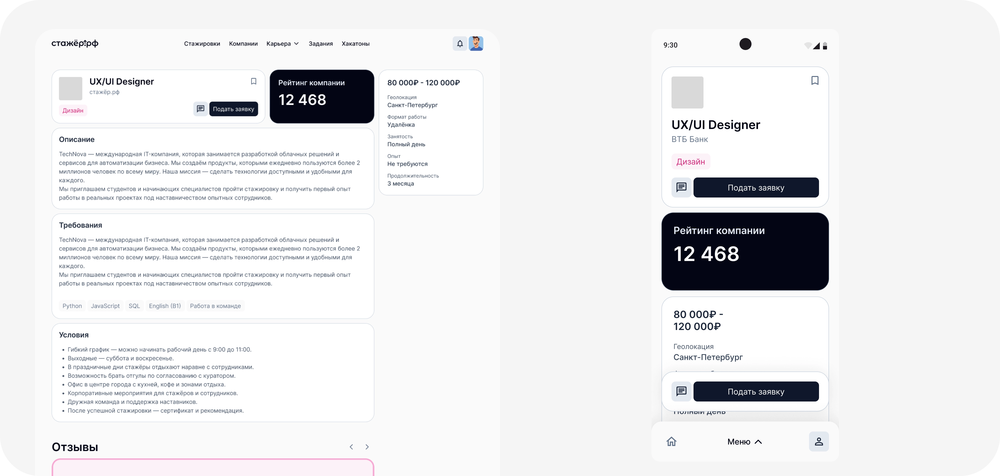
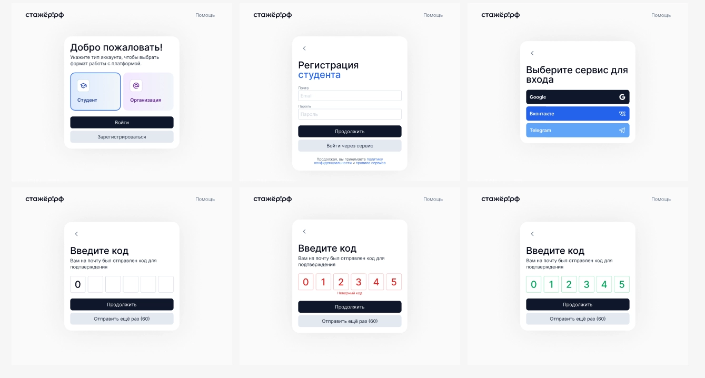
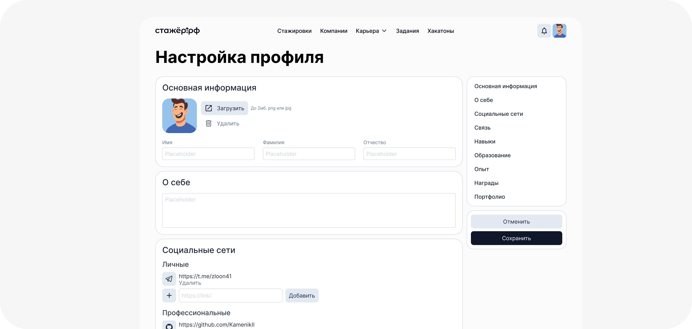
Текущий этап
Спроектированы и протестированы ключевые сценарии. Продукт на стадии разработки и подготовки к MVP с фокусом на сторону студентов.